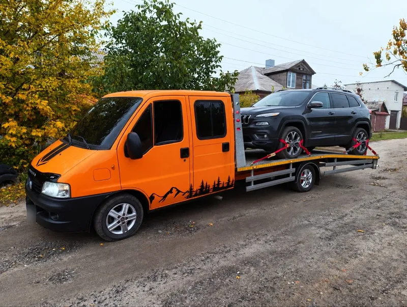

Подача від 30 хвилин
Уточнюємо вашу адресу та одразу повідомляємо орієнтовний час. Якщо дорога або завантаження потребують більше часу, обговоримо це під час замовлення.
Неприємності залиште позаду.
Дбайливо завантажимо та доставимо ваше авто туди, де на нього чекають.
Час подачі залежить від адреси та зайнятості евакуатора.

Від першого дзвінка до розвантаження — зрозумілі домовленості та увага до вашого авто.
Уточнюємо вашу адресу та одразу повідомляємо орієнтовний час. Якщо дорога або завантаження потребують більше часу, обговоримо це під час замовлення.
Фіксуємо погоджену вартість для описаного маршруту й умов. Якщо обставини на місці відрізняються, спочатку обговоримо зміни з вами.
Використовуємо ремені за колеса та перевіряємо фіксацію перед початком руху. Зсувна платформа допомагає обережно завантажити автомобіль.
Заздалегідь запитуємо про ключі, стан коліс і доступ до авто. Додаткові роботи та їхню вартість погоджуємо до виконання.
Заберемо автомобіль у місті або за його межами. Для заміського виїзду попросимо точну локацію, напрямок руху та найближчий орієнтир.
Розрядився акумулятор або закінчилося пальне? Опишіть ситуацію: узгодимо допомогу на місці, якщо повне перевезення автомобіля не потрібне.
Викликати евакуатор можна для несправного авто, планового перевезення або доставки після купівлі. Підкажемо, які дані потрібні саме у вашому випадку.
Перевеземо автомобіль після поломки, ДТП або купівлі. Скажіть марку, модель і стан коліс — підберемо спосіб завантаження та погодимо маршрут до СТО, дому чи місця зберігання.
від 1800 грнДопоможемо з перевезенням мікроавтобуса або робочого автомобіля. Перед виїздом уточнимо фактичну масу, габарити й наявність вантажу: можливість перевезення залежить від характеристик техніки та платформи.
від 1800 грнЕвакуація мотоцикла потребує стійкого розміщення й уважного кріплення. Узгодимо точки фіксації та доставимо вашу техніку на сервіс, до гаража або до покупця за погодженим маршрутом.
від 1800 грнОрганізуємо доставку техніки на спецмайданчик, стоянку або сервіс. Завчасно уточніть адресу, години приймання, контакт відповідальної людини та умови доступу до місця розвантаження.
від 1800 грнНе завжди потрібна евакуація. Можемо допомогти запустити автомобіль із розрядженим акумулятором або підвезти пальне. Тип пального, кількість та його окрему вартість погоджуємо телефоном.
Вартість — за домовленістюОберіть маршрут і тип авто. За хвилину матимете орієнтир вартості, а ми уточнимо деталі телефоном.
Для заміської поїздки вкажіть відстань від Чернігова в один бік. Базова подача окремо не додається. Тип автомобіля та позначені умови передамо разом із заявкою, щоб уточнити деталі телефоном.
Точна ціна — після уточнення деталей телефоном. Працюємо з 5:00 до 23:00.
Зателефонуйте або залиште заявку. Назвіть місце, модель авто, несправність і потрібну адресу доставки. Якщо місце небезпечне, спершу подбайте про власну безпеку.
Уточнимо відстань, стан коліс і необхідність лебідки. Назвемо ціну та очікуваний час подачі, щоб ви могли спокійно ухвалити рішення.
Підготуйте доступ до автомобіля та документи, які підтверджують право розпоряджатися ним. Водій оцінить умови й обережно завантажить авто.
Доставимо у будь-яку точку погодженого маршруту, перевіримо місце розвантаження та передамо автомобіль вам або визначеній вами людині.
Реальні перевезення на нашому Fiat Ducato. Від спортивного купе до сімейного позашляховика.
Якщо шукаєте евакуатор недорого, порівнюйте повну вартість маршруту та умови завантаження. Найнижча цифра в оголошенні не завжди описує вашу ситуацію.
За запитом «евакуатор ціна» орієнтуйтеся на маршрут: по Чернігову тариф фіксований, за місто рахуємо відстань в один бік. Тип авто не змінює ціну калькулятора. Точну вартість з урахуванням умов підтвердимо телефоном.
Уточнити вартість ↗| Послуга | Вартість |
|---|---|
| По Чернігову — фіксовано | 1800 грн |
| За місто — за км в один бік | 27 грн/км |
| Мінімум для заміської поїздки | 1800 грн |
| Допомога на дорозі | За домовленістю |
За місто: відстань від Чернігова в один бік × 27 грн, мінімум 1800 грн. Додаткові умови можуть вплинути на вартість — уточнюйте по телефону.
Розкажіть про свою ситуацію.
Пояснимо, як можемо допомогти.
По Чернігову діє фіксований тариф 1800 грн. За місто — 27 грн за кілометр від Чернігова в один бік, але не менше 1800 грн. Тип авто не змінює тариф. Додаткові умови можуть вплинути на вартість — уточнюйте по телефону. Допомога на дорозі — за домовленістю.
Орієнтовна подача по Чернігову — від 30 хвилин. Час залежить від вашої адреси, дорожньої ситуації та поточної зайнятості. Під час дзвінка уточнимо місце й повідомимо реальний час прибуття. Це орієнтир, а не гарантія прибуття за фіксований час.
Так, узгоджуємо перевезення по Чернігівській області та до Києва. Назвіть обидві адреси, бажаний час і модель автомобіля. Доступність далекої поїздки, маршрут та повну вартість підтверджуємо перед замовленням.
Такі ситуації розглядаємо індивідуально. Обов’язково попередьте, які колеса заблоковані, чи працює кермо та чи є доступ до автомобіля. Перед виїздом перевіримо можливість безпечного завантаження наявним обладнанням і погодимо додаткові роботи.
Зсувна платформа забезпечує пологий заїзд, а ремені фіксують автомобіль за колеса. Для низького кліренсу завчасно уточнимо висоту, стан бамперів і місце завантаження. Остаточне рішення щодо безпечного заїзду приймаємо з урахуванням конкретного автомобіля.
Спосіб оплати погодьте під час дзвінка до виїзду евакуатора. Уточніть, чи потрібна оплата переказом, готівкою або документи для підприємства. Не надсилайте передоплату за реквізитами, які не були підтверджені особисто телефоном.
Працюємо щодня з 5:00 до 23:00. Виклики після 23:00 не обслуговуємо. Для вечірнього виїзду з 21:00 до 23:00 позначте відповідну умову в заявці. Вартість уточнюйте телефоном. Заявки поза графіком переглядаємо наступного робочого ранку.
Назвіть адресу або орієнтир, марку авто, характер несправності та пункт призначення. Повідомте про відсутність ключів, заблоковані колеса, низький кліренс або обмежений під’їзд. Залиште номер, за яким водій зможе зв’язатися з вами.
У робочий час передзвонимо, уточнимо маршрут та допоможемо з перевезенням. Якщо потрібна термінова подача, краще одразу телефонуйте.
063 505 65 86Щодня з 5:00 до 23:00
Евакуатор у Чернігівській області виїжджає за попереднім погодженням. Повідомте населений пункт, найближче перехрестя або кілометр траси. Для поїздки до Києва заздалегідь узгодьте час і місце приймання.